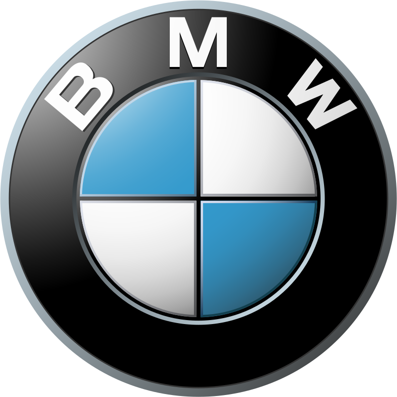

Ford
Історія бренда
Ford Motor Company була заснована 16 червня 1903 року Генрі Фордом у місті Дірборн, штат Мічиган, США. Завдяки інноваційному підходу до виробництва, компанія змінила автомобільну промисловість, зробивши автомобілі доступнішими для масового споживача. У 1908 році Ford випустила Model T — перший доступний автомобіль, який швидко став популярним завдяки простоті конструкції, надійності та відносно низькій ціні. Цей автомобіль ознаменував початок нової ери в історії автомобілебудування.
У 1913 році Ford впровадив на своїх заводах конвеєрне виробництво, що дозволило значно знизити собівартість автомобілів і підвищити швидкість їх випуску. Це стало революційним кроком, адже нова технологія дозволила зменшити час збирання автомобіля з 12 годин до всього лише 1,5 години. Завдяки цьому Ford Model T став ще доступнішим, і до 1920-х років компанія Ford стала одним із світових лідерів у галузі, а Генрі Форд — символом індустріального прогресу та американської мрії.
У 1960-х роках Ford випустила Ford Mustang — спортивний автомобіль, який швидко здобув культовий статус. Mustang став символом свободи, швидкості та стилю, що приваблював молодь у всьому світі. Пізніше, у 1980-х і 2000-х роках, Ford зосередився на інноваціях у сфері безпеки, паливної економічності та глобальному розширенні своєї діяльності.
Сьогодні Ford активно працює над розвитком електричного транспорту та сталого розвитку, зокрема випускає такі моделі, як електричний кросовер Mustang Mach-E та електричний пікап Ford F-150 Lightning. Компанія продовжує інвестувати в екологічно чисті технології та розробляє рішення, спрямовані на зменшення викидів і підвищення ефективності. Завдяки багатій історії та постійному прагненню до інновацій, Ford залишається однією з провідних автомобільних компаній у світі.
Моделі
Ford Mustang
Ford Mustang вперше з’явився в 1964 році і відразу став культовим автомобілем, що символізував свободу, швидкість і стиль. Ця модель швидко здобула популярність завдяки агресивному дизайну, потужному двигуну та доступній ціні. Mustang був створений як автомобіль для молоді, який міг забезпечити задоволення від водіння і мав привабливий вигляд. Згодом він став одним із найвідоміших спортивних автомобілів у світі.
Сучасні моделі Ford Mustang продовжують слідувати традиціям, пропонуючи високі показники продуктивності, новітні технології та різні варіанти двигунів — від економічніших до потужних, таких як V8. Крім того, Ford Mustang адаптується до нових трендів: у 2021 році з'явився повністю електричний кросовер Mustang Mach-E, що поєднує дизайн і дух класичного Mustang із сучасними технологіями електромобілів.
Ford F-150
Ford F-150 — це один із найвідоміших пікапів у світі і частина серії Ford F, яка виробляється з 1948 року. F-150 відомий своєю надійністю, міцністю і здатністю до важких навантажень. Це найпродаваніший пікап у США протягом десятиліть, і він завоював репутацію незамінного помічника як для робітників, так і для сімей, які шукають універсальний транспорт.
Сучасний Ford F-150 пропонує багато інновацій, включаючи функції для підвищення зручності, безпеки та економічності. Новітня модель, F-150 Lightning, — це повністю електричний пікап, який поєднує потужність і функціональність класичного F-150 із технологіями майбутнього. Він має високу вантажопідйомність, потужний запас ходу та можливість працювати як джерело енергії для дому чи електроінструментів.
Відгуки
"Ford Mustang завжди був моєю мрією, і після купівлі я жодного разу не пошкодував! Машина має потужний двигун, який дарує неймовірні відчуття від водіння. Звук двигуна — це окрема насолода, яка додає атмосферу агресивного спортивного автомобіля. А ще, дизайн — це щось неймовірне! Mustang притягує погляди на дорозі. Єдиний мінус — висока витрата пального, але для таких емоцій я готовий на це закрити очі."
"Mustang для мене — це щось більше, ніж просто машина. Він символізує свободу і пристрасть до подорожей. На ньому кожна поїздка перетворюється на пригоду. Навіть у базовій комплектації автомобіль вражає динамікою та комфортом. Є певні компроміси щодо простору в салоні та багажнику, але це спортивне авто, тому це не критично."
"Придбав Ford Mustang Mach-E і здивований, як вдало компанія адаптувала легенду в електричному форматі. Машина потужна, маневрена, а зарядка батареї вистачає на велику відстань. У салоні багато сучасних технологій, а також зручний екран з навігацією. Це новий підхід до класики, і він мені дуже подобається."
"Маю Ford F-150 уже третій рік і не уявляю, як раніше обходився без нього. Це потужний пікап, який допомагає мені в роботі: можна перевозити важкі вантажі, буксирувати причепи, і при цьому комфортно їздити з родиною на вихідні. Салон просторий і дуже зручний, особливо подобаються новітні функції для безпеки та розваг."
"Нещодавно купив Ford F-150 Lightning і дуже задоволений! Електрична версія має всі переваги класичного F-150, але тепер я ще й економлю на пальному. Автомобіль дуже тихий, потужний, а також є можливість заряджати інструменти прямо від авто. Так, це нова технологія, але вона дійсно працює і виправдовує свою ціну."
"Мій F-150 — це справжній друг на дорозі. Незалежно від того, чи працюю я на будівництві, чи вирушаю в подорож, він ніколи мене не підводить. Пікап дуже надійний і здатен проїхати навіть по бездоріжжю. Рекомендую всім, хто шукає універсальний автомобіль. Хоча витрата палива трохи висока, це компенсується його потужністю та витривалістю."
Повернутися до головного меню

BMW
Історія бренда
BMW (Bayerische Motoren Werke AG) було засновано в 1916 році в Мюнхені, Німеччина, як компанію з виробництва авіаційних двигунів. Перші роки компанія зосереджувалася на створенні двигунів для літаків, але після Першої світової війни, через обмеження на виробництво авіаційної техніки, BMW переключилася на виготовлення мотоциклів та автомобілів.
У 1923 році компанія представила свій перший мотоцикл — BMW R32, який став успішним на ринку завдяки надійності і потужності. Перший автомобіль BMW, Dixi 3/15, вийшов у 1928 році, коли компанія придбала автомобільний завод у Айзенасі. У 1930-х роках BMW почала виробляти спортивні автомобілі, закладаючи основу для репутації бренда як виробника динамічних і престижних авто.
Після Другої світової війни компанія зазнала фінансових труднощів, але згодом відновилася, зосередивши зусилля на випуску автомобілів преміум-класу та мотоциклів. У 1960-х роках BMW здобула популярність завдяки новій лінійці компактних спортивних седанів. Пізніше, у 1970-х роках, з'явилася легендарна серія 3, яка зробила BMW одним із найвпізнаваніших брендів у світі.
Сьогодні BMW відома як один із лідерів преміум-сегмента, відзначаючись інноваціями у сфері електромобілів та технологій автономного водіння, а також високою якістю, динамікою та стилем своїх автомобілів.
Моделі
BMW 3 Series
BMW 3 Series — це один із найпопулярніших і найуспішніших автомобілів компанії, який вперше з'явився у 1975 році. Це компактний спортивний седан, що поєднує динаміку, комфорт і стиль. 3 Series має відмінну керованість і потужні двигуни, що робить його вибором як для повсякденного використання, так і для любителів активного водіння. Останні моделі оснащені сучасними технологіями, такими як асистенти водія та інноваційна інформаційно-розважальна система.
BMW X5
BMW X5 — це розкішний середньорозмірний позашляховик, який дебютував у 1999 році. Він став першим кросовером BMW і здобув популярність завдяки поєднанню потужності, комфорту та високого рівня безпеки. X5 забезпечує відмінну прохідність та стабільність на будь-якій дорозі. Модель має просторий салон, розкішний інтер’єр і новітні технології, які роблять її ідеальним вибором для сімей та любителів подорожей.
Відгуки
"Воджу X5 вже рік, і автомобіль не перестає мене радувати! Двигун потужний, прискорюється легко, навіть з повним завантаженням. Салон дуже зручний і просторий — ідеальний для далеких поїздок. Єдине, що витрата пального доволі висока, але це було очікувано для такого рівня потужності. А система iDrive — просто шик, вся інформація під рукою. Раджу всім, хто цінує комфорт і надійність."
"Обрала X5 для сім'ї, і не пошкодувала! Салон дуже просторий, діти із задоволенням їздять, а багажник легко вміщує все необхідне для подорожей. Динаміка чудова, хоча керувати трохи важкувато в місті через великі габарити. Але в цілому я задоволена покупкою — авто справді варте своїх грошей."
"Для мене X5 M — це машина мрії. Купив для щоденних поїздок і драйву на трасі. Потужність шалена, а звук двигуна — окреме задоволення! Автомобіль дарує незабутні емоції за кермом. Єдиний мінус — витрата пального, але для такої потужності це нормальна річ."
"BMW 3 Series просто створена для активного водіння. Машина має дуже гостре управління і дає відчуття повного контролю на дорозі. Інтер'єр комфортний, хоча заднім пасажирам може бути трохи тісно. Загалом, це чудовий вибір для тих, хто цінує драйв."
Повернутися до головного меню
Toyota
Історія бренда
Toyota — один із найбільших і найвідоміших автовиробників у світі, заснований у 1937 році в Японії. Спочатку компанія була частиною Toyoda Automatic Loom Works, яка займалася виробництвом ткацьких верстатів. Засновник компанії, Кіїчіро Тойода, вирішив створити відділ для виробництва автомобілів, і так з'явилася Toyota Motor Corporation.
У 1936 році компанія випустила свій перший легковий автомобіль, Toyota AA, а вже після Другої світової війни почала розширювати виробництво, випускаючи недорогі, надійні машини. У 1960-х роках Toyota почала виходити на міжнародні ринки, а модель Toyota Corolla стала однією з найбільш продаваних у світі.
У 1980-х роках Toyota представила лінію Lexus як преміальний бренд і продовжила розширювати свою глобальну присутність. У 1997 році компанія зробила прорив у галузі гібридних автомобілів, випустивши Toyota Prius — перший масовий гібридний автомобіль у світі.
Сьогодні Toyota відома своєю якістю, інноваціями та зосередженістю на екологічних технологіях, продовжуючи інвестувати в електромобілі та водневі двигуни.
Моделі
Тoyota Corolla
Тoyota Corolla — це одна з найбільш популярних моделей Toyota та один із найбільш продаваних автомобілів у світі. Відома своєю надійністю, економічністю та доступною ціною, Corolla ідеально підходить для щоденного використання. Модель пропонує компактний дизайн, комфортабельний салон, сучасні технології та економічні варіанти двигунів, включаючи гібридні. Corolla особливо цінується за низькі експлуатаційні витрати і високу довговічність.
Toyota Land Cruiser
Toyota Land Cruiser — це легендарний позашляховик, відомий своєю прохідністю та міцністю. Він розроблений для суворих умов та бездоріжжя, але при цьому має просторий і комфортний салон, який підходить для далеких поїздок. Land Cruiser оснащений потужними двигунами, високотехнологічними системами безпеки та має велику вантажопідйомність, що робить його ідеальним вибором для мандрівників і любителів активного відпочинку.
Відгуки
"Купила Corolla для щоденних поїздок по місту, і це найкраще авто, яке я мала. Надійне, економічне, зручне у використанні. Витрата пального невелика, що особливо радує в умовах сучасних цін на пальне. Салон стильний, є все необхідне, а головне — відчуваю себе в безпеці. Ідеальний вибір для міського життя!"
"Придбав Corolla через її репутацію надійного авто, і не помилився! За три роки жодних серйозних поломок, лише планове обслуговування. Комфортна, добре тримається на дорозі, керування легке і приємне. Ідеальна машина для тих, хто цінує простоту та практичність. Думаю, прослужить мені ще багато років."
"Це справжній звір на бездоріжжі! Вже кілька разів їздив в гори — Land Cruiser проходить навіть там, де інші машини не можуть проїхати. Водночас, на трасі почувається впевнено, з комфортом, ніби їдеш в преміум-салоні. Єдиний мінус — витрата пального, але це очікувано для такого авто. Дуже задоволений покупкою!"
"Вибирали Land Cruiser для сімейних поїздок на природу, і не пошкодували! Просторий салон, зручні сидіння, багато місця для речей. Двигун потужний, працює бездоганно. Так, витрата пального висока, але він вартий кожної краплі! Це не просто авто, це справжній сімейний друг, який впорається з будь-якими умовами."
Повернутися до головного меню